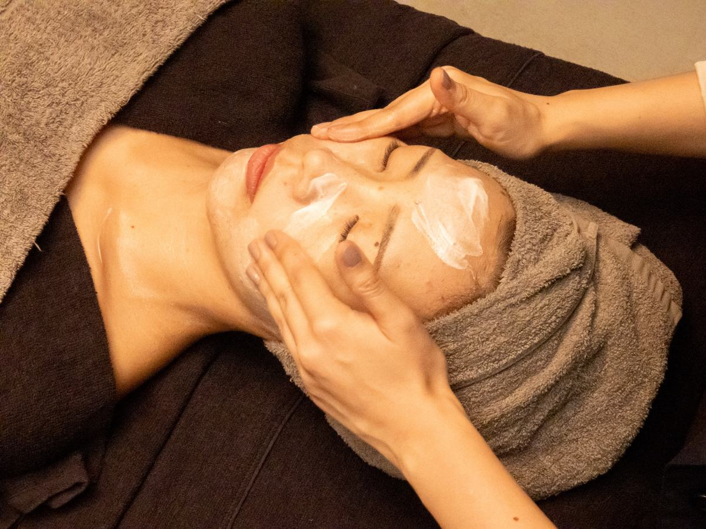

FACIAL
フェイシャルエステ
トップ ／ フェイシャルエステ
医療発想の、
新時代フェイシャル。
Salon de Miro のフェイシャルは、「エイジングケア」と「美白・シミケア」の2軸。5種のGF（グロースファクター）やボリュームエッセンス、トラネキサム酸・グルタチオンなど、注目の美容成分をエレクトロポレーションで肌の奥まで届けます。
ハリ・ボリュームの不足も、シミ・くすみ・色ムラも。年齢とともに変わる肌に、いまのあなたに合わせたケアを。
FEATURE
2つのアプローチ
✦
5種のGF導入
表皮・真皮・筋繊維・骨・毛細血管など、見た目年齢に関わる組織へ幅広くアプローチ。
✧
ボリュームエッセンス
ペプチドやフィト幹細胞エクソソームで、痩せた肌をふっくらと。支える構造から立て直します。
❖
3種の美白成分
トラネキサム酸・グルタチオン・速効性ビタミンCの相乗効果で、透明感あふれる肌へ。
エイジングケア
GF導入エイジングケアフェイシャル
12,000円
5種のGF（グロースファクター）を首から全顔、目元・口元まで導入。角質ケアや超音波洗浄もついたフルコース。
GF導入シンプルフェイシャル
9,900円
よりお手軽なエイジングケアに。クレンジング→ピーリング→GF導入→パックのシンプルケア。
GF+ふっくら若見えボリュームフェイシャル
15,000円
GFとボリュームエッセンスをW導入。シワ・タルミ感、頬のコケや目元のふっくら不足が気になる方に。
ふっくら若見えボリュームフェイシャル
12,000円
ボリュームエッセンスをお顔全体に導入。元々痩せ型で骨格が目立つのがお悩みの若い方にも。
立体デザイン小顔フェイシャル
9,900円
お顔の上半分はふっくら、下半分はシャープに。脂肪の配置を意識した小顔フェイシャル。
美白・シミケア
シミケア フェイシャル S
7,700円
医療機関と提携して開発されたマシンで気になるシミをポイントケア。2週間に1回、4〜6回で効果を実感（※個人差あり）。
シミケア フェイシャル M
8,800円
Sに超音波ケアをプラス。さらなる透明感と張りを生み出します。
シミケア フェイシャル L
9,900円
シミケアの最上級。シミケア+超音波+角質ケアで活き活きとした美肌へ。
水光白玉美白肌フェイシャル
13,000円
トラネキサム酸・グルタチオン・速効性ビタミンCのトリプルケア。透明感あふれる水光白玉肌へ。
水光透明感美肌フェイシャル
9,900円
トラネキサム酸とグルタチオンで赤み・色ムラ・くすみを抑え、肌全体をトーンアップ。
高濃度ビタミンC導入フェイシャル
8,800円
高濃度ビタミンCとアルブチン配合の美容液を導入。くすみも肌奥のかくれジミも徹底的にケア。
初回 定価から10%OFF ／ 再来割引 フェイシャルメニューは1ヶ月以内再来5%OFF